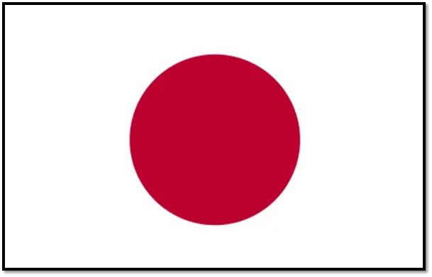
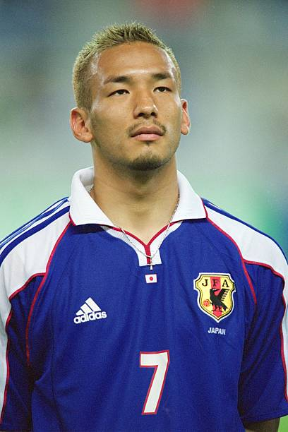
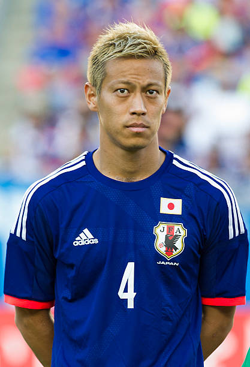
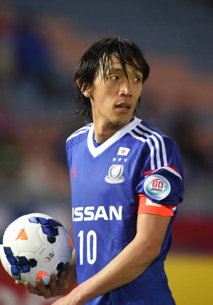
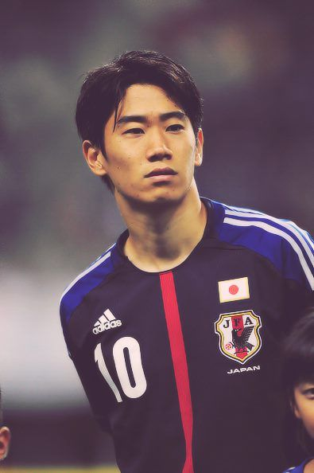

JAPÓN
La máxima potencia de Asia llega consolidada tras dar golpes de autoridad en las últimas ediciones, buscando el ansiado quinto partido.





Cayeron de forma dramática en 2002, 2010, 2018 y 2022.
Máximo ganador histórico de la Copa Asiática (4 títulos).
Clasificación ininterrumpida a todos los Mundiales desde 1998.
AFC (Asia)
Los Samuráis Azules (Samurai Blue)
Romper la barrera histórica y clasificar a los Cuartos de Final.